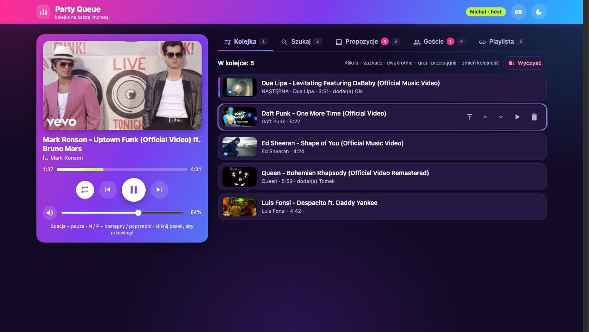
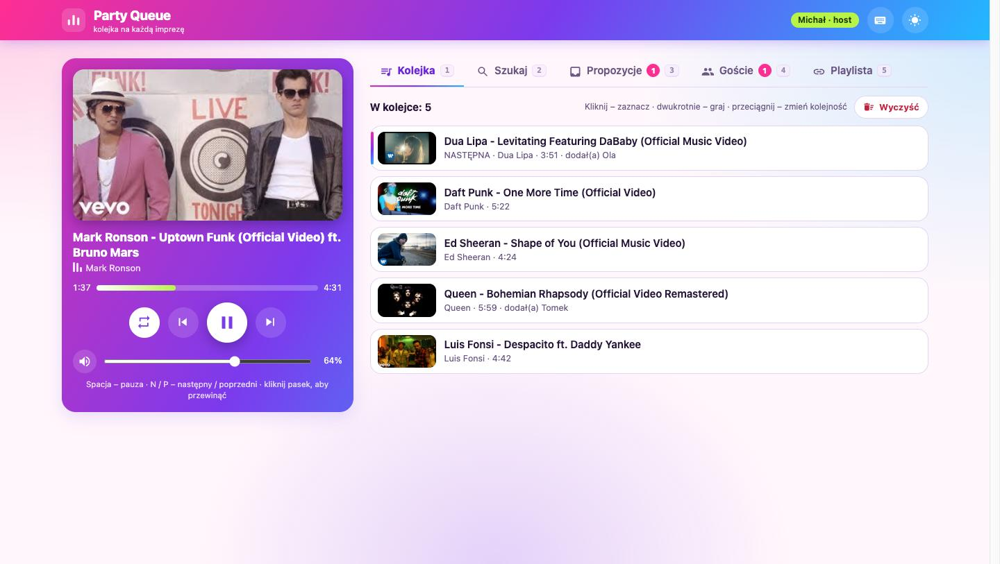
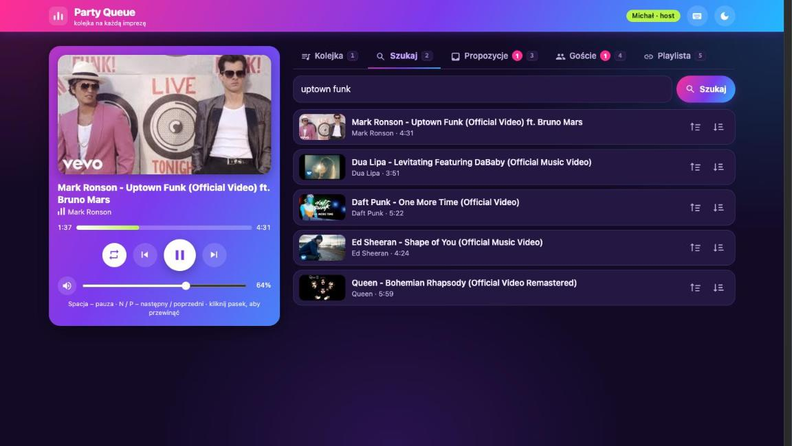
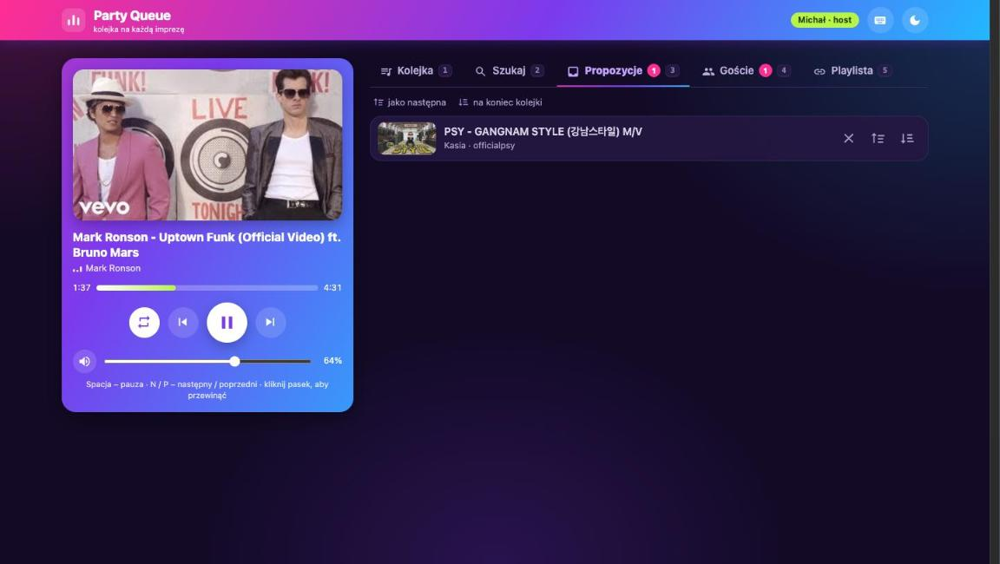
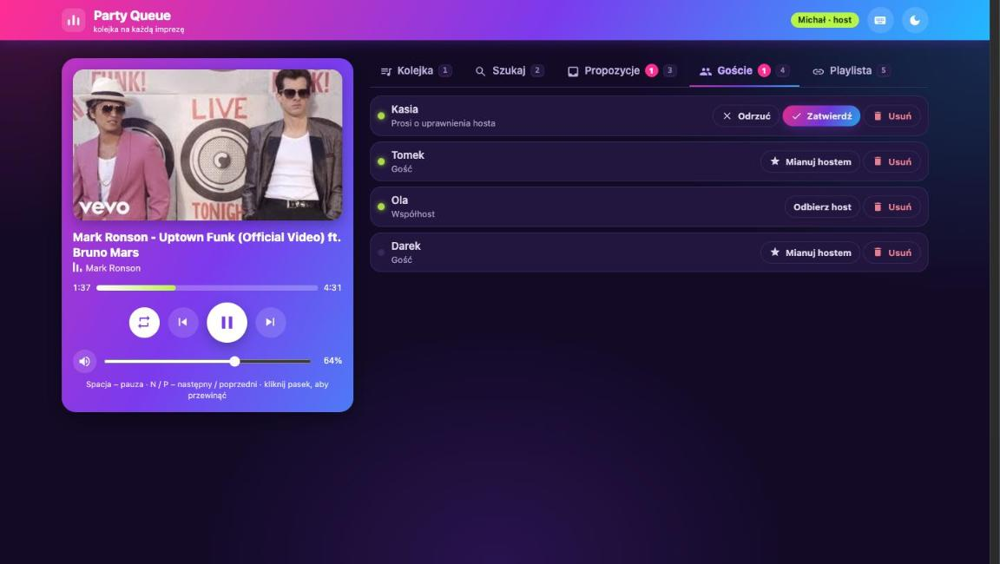
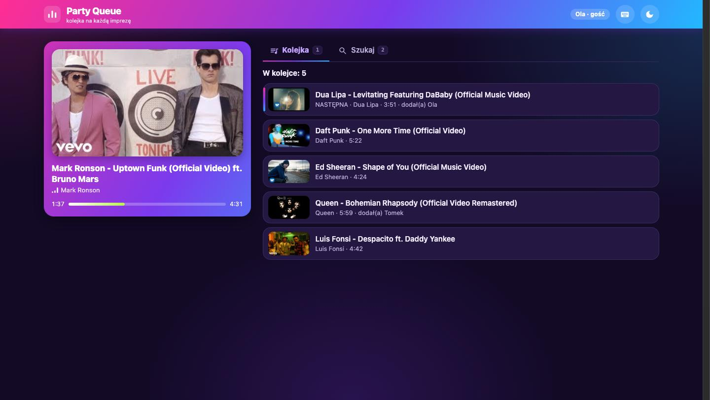
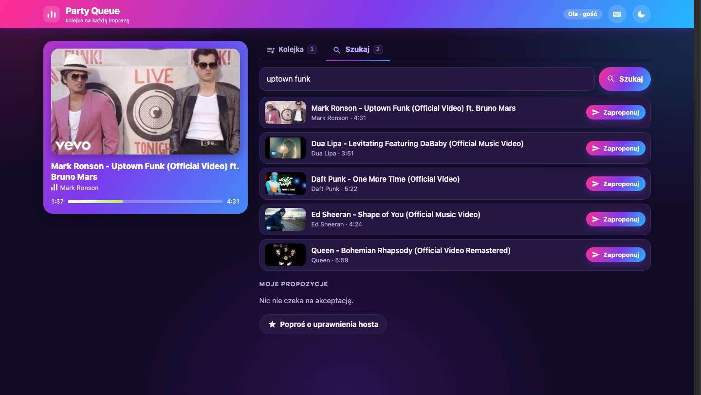
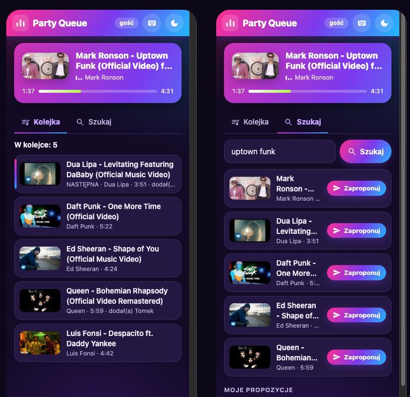

One phone.
One queue.
Everyone's songs.
Party Queue turns an Android phone into a party jukebox. It plays YouTube without ads, your guests add songs from their own phones or laptops through a web page, and you decide what plays next. No accounts, no API keys, nothing to install for guests.

Get the app
Scan the code with the phone you want to use as the jukebox, or open the link on it.
How it works
Three minutes from install to the first song.
- Install and open it on the host phoneThe phone that plays the music. Keep it plugged in near the speakers. Join Wi-Fi (or switch on the phone's hotspot).
- Pick the musicOpen a YouTube playlist (YouTube tab) or search for songs. The queue is yours; nothing is written back to YouTube.
- Show the QR codeIn the Zaproś (Invite) tab. Guests scan it, type a name and propose songs; you approve them as next or at the end. Make a friend a co-host and they can run the party from a laptop.
Everything it does
The complete list: what the host's app and the guests' web page can do.
▶ Plays YouTube – without ads
- Ad-free playback in an embedded Firefox engine (GeckoView) with uBlock Origin built in. No Google account, no API key.
- Keeps playing with the screen off (foreground service and notification). CPU and Wi-Fi locks are held only while they are needed.
- Instant song changes: the next song is already loaded in a hidden second player. YouTube makes people who block ads wait 5–13 s for a video to start; this hides that wait.
- Smooth hand-over: when you skip, go back or play a song now, the old song fades out (2 s) while the new one fades in. A song that ends on its own switches instantly.
- Good sound: the best audio stream YouTube offers (Opus, about 160 kb/s). The picture is tiny (144p) and hidden by default to save power; one button cycles hidden → small → full screen.
- A pause stays a pause. After 10 minutes the players are released to save the battery; play continues at the same position.
- Volume slider for the phone's media volume (it follows the volume keys); tap the speaker to mute.
- Tells you what is wrong: if a song has not started after 20 s the app says why – no internet, a network without access, Data Saver, Android's sleep mode, battery saver, or just a slow start. Songs that cannot be played are skipped after 45 s.
- Cookie banners are rejected automatically; the queue survives restarts (it comes back paused).
☰ A queue you control
- Playlists: open any public or unlisted YouTube playlist and press Ustaw jako aktualną playlistę (Set as current playlist). Songs keep YouTube's order (shuffle is a switch); the first ~100 songs are loaded. YouTube Mixes can be imported from a video page. Private playlists work after signing in (experimental – setting the list to Unlisted is the easy way).
- Search in the app: Szukaj piosenki do dodania opens a full-screen search (title, artist or a pasted link). Every result has two icon buttons – an arrow to the top of a list (play next) and an arrow to the bottom (end of the queue). The search stays open so you can add several songs in a row.
- YouTube tab: the real mobile YouTube with an address bar (type a search or paste a video or playlist link). The page fills the screen – the app's bars scroll away with it. The round + button is grey while the page has nothing to add; on a playlist or video it slides up a panel (playlist: shuffle and set as current; video: next / end of the queue) that goes away again.
- Gestures on the queue: tap a song to move it to the top, swipe right to play it now, swipe left to remove it, hold and drag to reorder (the list scrolls at the edges). A gentle hint wiggles the first row now and then. Wyczyść clears the queue (after asking); Powtarzaj (repeat) refills it from the playlist.
- Proposals from guests wait in the Propozycje tab. Approve each as next or at the end, or reject it.
- Thumbnails everywhere; long titles scroll slowly so you can read them (they stand still if you turned animations off in Android).
👥 Guests join with a link, not an app
- The phone serves a web page on the local network (
http://192.168.x.x:8080/). The Zaproś tab shows its QR code, the address, Udostępnij link (share) and Kopiuj (copy), and lets you choose the network if the phone has several. - A guest types a name and is in – no code, no account, nothing to install. Works on phones, tablets and computers.
- Guests see the live queue and what is playing, search YouTube, propose songs (up to 5 waiting, no duplicates), follow their proposals and can ask for host rights.
- You can close the door (Przyjmuj nowych gości), see who is online, remove anyone, and make any guest a co-host with one tap – no request needed. Their page reloads into host mode; take it back whenever you like.
- If your router isolates Wi-Fi clients, use the phone's hotspot.
⌨ Run it from a laptop or another phone
- A co-host has the same powers as the host: play/pause, seek (click the progress bar), previous/next, repeat, volume; move, play now, remove and clear queue items; approve proposals and other co-hosts; load a playlist from a link; search and add songs as next or at the end.
- The page is responsive: a phone layout and a two-column desktop layout, light/dark/auto theme, a banner when the connection drops and automatic reconnecting.
- Keyboard: Space play/pause · N / P next / previous · R repeat · + − volume · M mute · ↑ ↓ or J K select a song · Enter play it · T move to top · Alt+↑/↓ move · Delete remove · / search · 1–5 tabs · D theme · ? help.
- Mouse: drag and drop to reorder, double-click to play, icon buttons with tooltips that show their shortcut.
🎨 Looks like a party, sips power
- Light, dark or automatic theme; gradients, an animated equalizer and a slowly flowing now-playing card; portrait and landscape layouts; an adaptive launcher icon (with a themed variant).
- The title bar hides after a few seconds; pull down or tap its handle to bring it back. In the YouTube tab the bars scroll away so the page gets the whole screen.
- Battery: the screen is not kept on unless you switch Nie wygaszaj ekranu on; locks are held only while needed; the network updates to guests are calm; animations run only while music plays.
🔒 Private by design
- No account, no tracking, no analytics, no ads. The queue lives on the phone. The only traffic is YouTube's own and the local web page.
- The page is plain HTTP on your local network (no TLS): use a network you trust. Guests get random tokens; the host approves every proposal.
- Open source (AGPL-3.0). Components used: GeckoView, uBlock Origin, Ktor, Jetpack Compose and others, listed in the repository.
Screenshots
The host's app on the phone and the web page that guests and co-hosts see.
The web page for guests and co-hosts















Install
Party Queue is not on Google Play, so you install the APK file yourself. It takes a minute.
- Download the APK on the phoneScan the QR code above with the phone's camera, or open this link on it. Your browser may warn that this type of file can harm your device – choose Download anyway / Keep. The file is about 225 MB.
- Allow the installationOpen the downloaded
party-queue.apk. If Android asks, allow your browser (or file manager) to Install unknown apps: Settings → Apps → Special access → Install unknown apps. Google Play Protect may say the app was not scanned or comes from an unknown developer – choose More details → Install anyway. - Open it and say yes twiceAllow notifications (Android 13+; they keep the music alive with the screen off), and press Pozwól (Allow) on the banner that asks to let the app run in the background.
- Connect and start the partyJoin the phone to Wi-Fi (or switch on its hotspot). Open the YouTube tab, pick a playlist, then show the QR code from the Zaproś tab. Guests must be on the same network.
Check the download (optional)
Every release carries a checksum file. Put both files in one folder and run:
# macOS / Linux
shasum -a 256 -c party-queue.apk.sha256
# Windows (PowerShell)
(Get-FileHash party-queue.apk -Algorithm SHA256).Hash.ToLower() # compare with the .sha256 file
# or install from a computer
adb install -r party-queue.apkUpdate
There is no store, so updates are manual – and just as simple.
- Check which version you haveSettings → Apps → Party Queue shows the version at the bottom. The newest version is at the top of this page and on the releases page.
- Download the new APK and open itUse the same QR code or link. Android installs it over the old version; your queue, guests and settings stay.
- Get told about new versionsOn GitHub press Watch → Custom → Releases on the repository, or subscribe to the releases feed in any feed reader.
Questions
Guests cannot open the page.
Check that they are on the same Wi-Fi as the host phone, and use the address shown in the Zaproś tab – the phone's address can change after it reconnects. Some routers and guest networks isolate devices from each other; switch on the host phone's hotspot and join it instead.
The music stops when the screen turns off.
Allow notifications and press Pozwól on the banner (battery optimisation off for the app). On some phones also set the app to Unrestricted battery use in the system settings.
A song does not start.
Wait 20 seconds: the app then shows why under the player (no internet, Data Saver, sleep mode…). YouTube itself sometimes delays the start of a video; songs that cannot be played are skipped after 45 seconds.
Can I use my private playlists?
Public and unlisted playlists work without signing in. For a private one, sign in on the YouTube tab (experimental) – or set the playlist to Unlisted on YouTube, which is the easiest way.
Do I need a Google account or an API key?
No. The app reads the same public pages a browser does.
Are there ads?
No, uBlock Origin is built in. If one ever slips through, please report it on GitHub.
Can I use an iPhone as the host?
No – the host must be an Android phone (Android 10+, 64-bit). Guests can use any phone, tablet or computer with a browser.
Is it legal?
It is not affiliated with YouTube, Google or Mozilla. Using it may conflict with YouTube's Terms of Service; use it at your own risk and for private events.